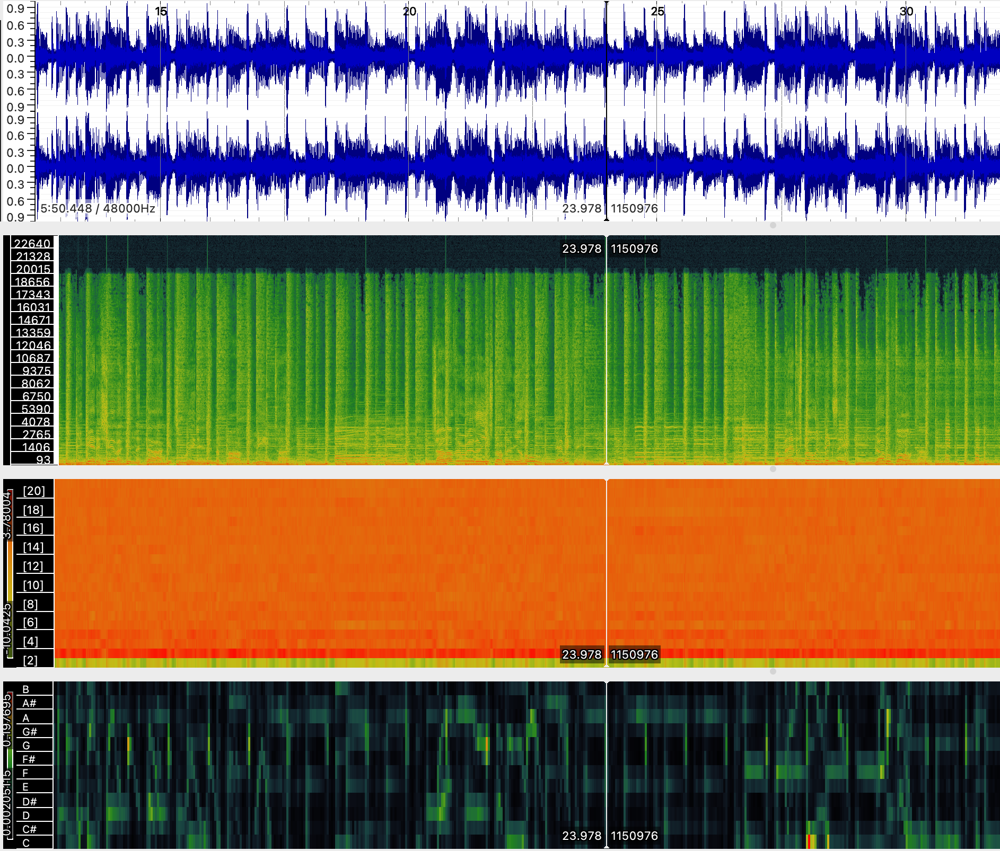
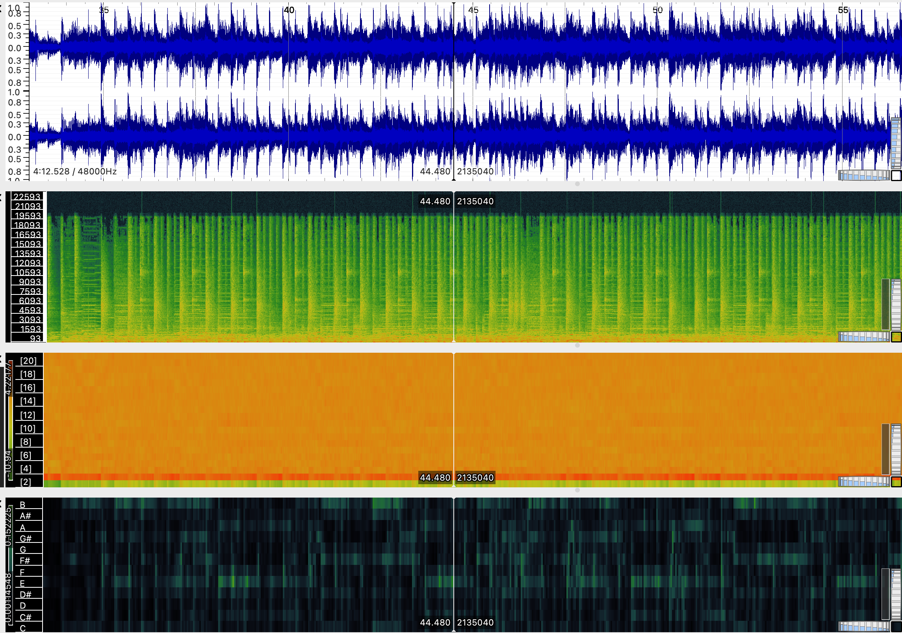
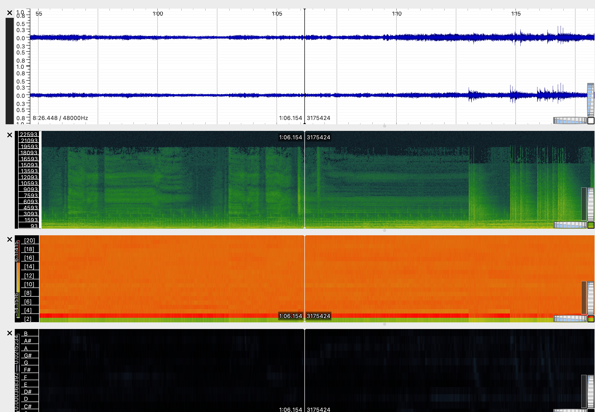
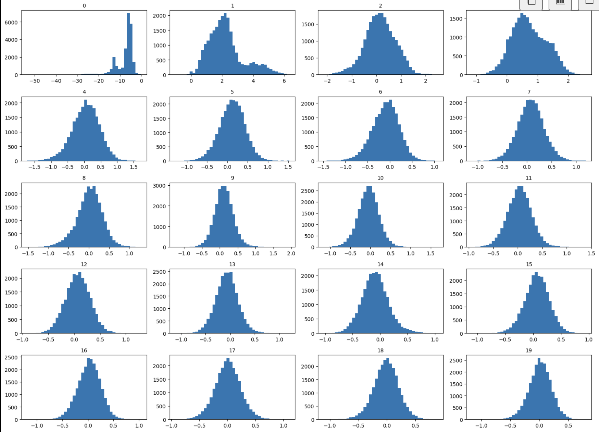

Week 9 Audio Similarity & Transcription
Task 1: Extract Features
For this task, I used the three audio tracks selected in Week 8. Each image below shows the following features: Waveform, Spectrogram, Mel Frequency Cepstral Coefficients (MFCCs), and a Chromagram.
Sultans of Swing
Walk of Life
Money for Nothing
Task 2: Compute and Visualize Features with Histograms
For this task, I used Python to compute and visualize histograms of selected audio features for the same three tracks from Week 8.
Sultans of Swing – Feature Histograms

Walk of Life – Feature Histograms

Money for Nothing – Feature Histograms
Reflection
Overall, the histograms look quite similar to each other, which isn’t surprising since they’re all by the same band, and the songs sound quite similar to each other.. It was really interesting to see these patterns visually, and analysing the histograms gave me some useful insights into the similarities in their style and structure.